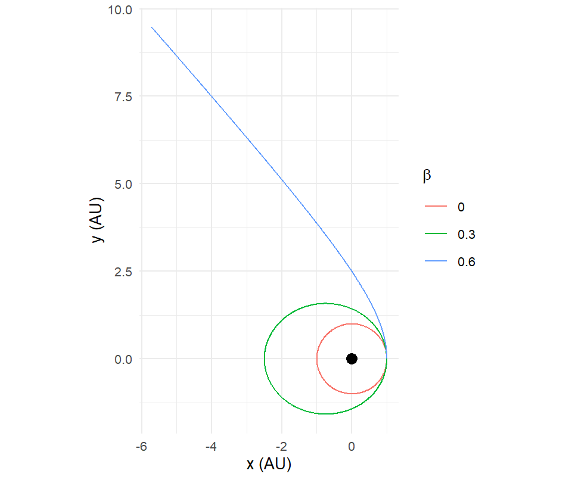
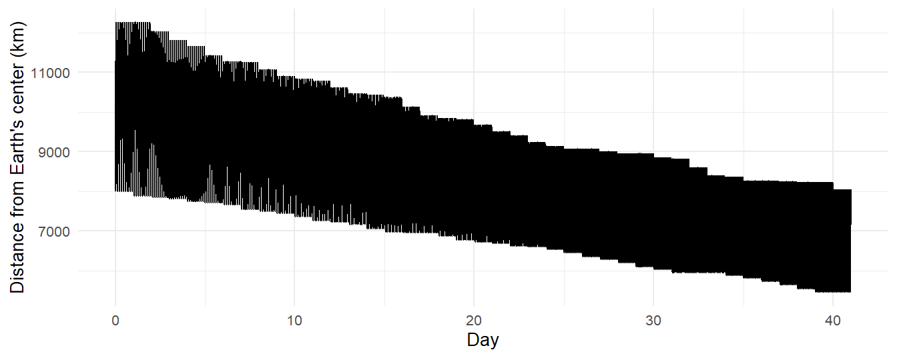

closest_approach <- function(sim) {
sim |>
select(time, id, x, y, z) |>
inner_join(sim |> select(time, id2 = id, x2 = x, y2 = y, z2 = z),
by = "time", relationship = "many-to-many") |>
filter(id < id2) |>
mutate(r = sqrt((x - x2)^2 + (y - y2)^2 + (z - z2)^2)) |>
group_by(id, id2) |>
slice_min(r, n = 1) |>
ungroup() |>
select(id, id2, time, r)
}16 Limits and Extensions
Chapter 1 listed what orbitr leaves out: bodies have no size, gravity is Newtonian, there are no forces but gravity, and the step is fixed. This chapter returns to each omission with the physics of what is missing, the size of the effect, and what it would take to add it. Some of the additions are on the package roadmap. Two of them you can do today with the tools this book has built, and the chapter shows how. The rest are described precisely enough that if you decide to implement one, you will know what you are implementing.
16.1 Collisions
Two point masses can pass through each other. Nothing in the equations of motion objects, and if the step is small enough the integrator will carry them straight through with energy conserved. In reality two planets that pass within the sum of their radii collide. The package has no notion of radius, so collisions are something you detect after the run, by looking.
A helper that finds the closest approach of every pair over a simulation is a self-join on time, like Chapter 5’s hand-written energy sum:
Run it on Chapter 11’s chaotic triple, where the stars came within a fraction of an AU of one another during the slingshot:
triple <- create_system() |>
add_body("Star A", mass = 1e30, x = 1e11, y = 0, vx = 0, vy = 15000) |>
add_body("Star B", mass = 1e30, x = -5e10, y = 8.66e10, vx = -12990, vy = -7500) |>
add_body("Star C", mass = 1e30, x = -5e10, y = -8.66e10, vx = 14000, vy = -8000) |>
simulate_system(time_step = seconds_per_hour, duration = seconds_per_year * 3)
closest_approach(triple) |>
mutate(solar_radii = r / 6.957e8, day = time / seconds_per_day)
#> # A tibble: 3 × 6
#> id id2 time r solar_radii day
#> <chr> <chr> <dbl> <dbl> <dbl> <dbl>
#> 1 Star A Star B 9288000 73615522151. 106. 108.
#> 2 Star A Star C 82933200 20904109167. 30.0 960.
#> 3 Star B Star C 10519200 61636240576. 88.6 122.If any pair’s closest approach is less than the sum of their radii (two solar radii, for Sun-like stars), the simulation went somewhere reality would not have, and everything after that time is fiction. The check costs seconds and belongs at the end of every run involving close encounters.
A real collision model needs a rule for what happens next. The usual choice in planet-formation codes is a perfectly inelastic merger: the two bodies become one with the summed mass, the center-of-mass position, and the momentum-conserving velocity \(\mathbf{v} = (m_1\mathbf{v}_1 + m_2\mathbf{v}_2)/(m_1+m_2)\). Momentum is conserved; kinetic energy is not, and the difference is the energy that goes into cratering and heat. The roadmap’s radius argument on add_body() is the hook for this, and system_from_simulation(), remove_body(), add_body(), and continue_simulation() are enough to do it by hand today: stop at the collision time, rebuild the system from that snapshot, replace the two bodies with their merger, and continue.
16.2 Forces other than gravity
Every force the package knows is in the kernel of Chapter 15. Three others matter in practice, and they behave very differently.
Radiation pressure
Sunlight carries momentum, and a small body absorbing it feels a force directed away from the Sun that falls off as \(1/r^2\), exactly like gravity. For a body of mass \(m\) and cross-section \(A\) at distance \(r\), \(F = L_\odot A/(4\pi r^2 c)\), where \(L_\odot\) is the Sun’s luminosity. Because it has the same \(r\)-dependence as gravity, radiation pressure does not change the shape of the orbit equation at all; it just reduces the effective gravitational parameter:
\[ \mu_{\mathrm{eff}} = GM_\odot\,(1 - \beta), \qquad \beta = \frac{F_{\mathrm{rad}}}{F_{\mathrm{grav}}} = \frac{L_\odot A}{4\pi c\,GM_\odot\,m}. \tag{16.1}\]
\(\beta\) depends on \(A/m\), so it is tiny for a planet and large for dust. For a sphere of density \(\rho\) and radius \(s\), \(A/m = 3/(4\rho s)\), which works out to \(\beta \approx 0.57/(\rho s)\) with \(\rho\) in g/cm\(^3\) and \(s\) in microns: a micron-sized grain, rocky or icy, feels sunlight at a sizable fraction of gravity.
Because the correction is just a rescaled \(\mu\), you can simulate it today with the tool already in create_system(). For a test particle in orbit around the Sun alone, setting \(G \to G(1-\beta)\) is exact. A grain released from a parent body on a circular orbit keeps the parent’s speed \(v = \sqrt{GM/r}\) but sees only \(\mu_{\mathrm{eff}}\); by Chapter 4’s rule, \(e = |k^2 - 1|\) with \(k^2 = v^2/(\mu_{\mathrm{eff}}/r) = 1/(1-\beta)\), so
\[ e = \frac{\beta}{1-\beta}, \]
and the grain is unbound (\(e \ge 1\)) when \(\beta \ge 1/2\). Dust released from a comet with \(\beta > 0.5\) leaves the solar system; that is what the dust tail is.
grain <- function(beta) {
create_system(G = gravitational_constant * (1 - beta)) |>
add_sun() |>
add_body("grain", mass = 1e-12, x = distance_earth_sun, vy = speed_earth) |>
simulate_system(time_step = seconds_per_day, duration = seconds_per_year * 3) |>
filter(id == "grain") |>
mutate(beta = beta)
}
bind_rows(grain(0), grain(0.3), grain(0.6)) |>
ggplot(aes(x / distance_earth_sun, y / distance_earth_sun,
color = factor(beta))) +
geom_path() +
annotate("point", x = 0, y = 0, size = 3) +
coord_equal() +
labs(x = "x (AU)", y = "y (AU)", color = expression(beta))
The trick only works when the Sun is the only massive body. With planets present, rescaling \(G\) would weaken their gravity too, and a proper implementation adds the radiation force to the grain alone, inside the kernel.
Drag
Atmospheric drag on a satellite is \(\mathbf{F} = -\tfrac12 \rho(r)\, C_D A\, v\,\mathbf{v}\), opposing the velocity and growing with the square of the speed and with the air density, which falls off exponentially with altitude. It is dissipative: it removes energy, and since \(\varepsilon = -\mu/2a\), removing energy shrinks the orbit, which lowers the satellite into denser air, which increases the drag. The decay accelerates until re-entry. The International Space Station loses about two kilometers of altitude a month to this and is periodically boosted.
Drag depends on velocity, which the kernel does not receive, so adding it is a signature change as well as a few lines. But there is a way to approximate it without touching the kernel, and it is a real numerical technique: operator splitting. Run gravity for a short interval with simulate_system(), then apply the drag as an instantaneous change to the velocity, then run gravity again. Chapter 13’s continue_simulation() makes the loop a few lines. Here is a toy satellite in an atmosphere with an artificially short damping time, so that a year of decay fits in a figure:
kick_drag <- function(sim, body, tau, dt) {
last <- sim$time == max(sim$time) & sim$id == body
f <- exp(-dt / tau) # velocity damping over the interval
sim$vx[last] <- sim$vx[last] * f
sim$vy[last] <- sim$vy[last] * f
sim$vz[last] <- sim$vz[last] * f
sim
}
sat <- create_system() |>
add_body("Earth", mass = mass_earth) |>
add_body("Sat", mass = 1e3, x = 8e6, vy = sqrt(gravitational_constant * mass_earth / 8e6) * 1.1) |>
simulate_system(time_step = 60, duration = seconds_per_day)
for (day in 1:40) {
sat <- sat |>
kick_drag("Sat", tau = 200 * seconds_per_day, dt = seconds_per_day) |>
continue_simulation(time_step = 60, duration = seconds_per_day)
}
sat |>
filter(id == "Sat") |>
mutate(r_km = sqrt(x^2 + y^2) / 1e3) |>
ggplot(aes(time / seconds_per_day, r_km)) +
geom_line() +
labs(x = "Day", y = "Distance from Earth's center (km)")
Splitting is first-order accurate in the interval between kicks, so make the interval short compared with the drag timescale. The toy applies the same fractional kick wherever the satellite happens to be, which is what a body moving through a uniform medium feels. Real atmospheric drag is concentrated at periapsis, where the air is densest, and that changes the shape of the decay: periapsis stays nearly fixed while apoapsis is pulled down, the orbit circularizes, and only then does the whole thing spiral in. The same loop produces that behavior if the kick depends on altitude through a density profile, \(\tau(r) = \tau_0\exp\big((r - r_0)/H\big)\) with a scale height \(H\) of about 60 km, applied every few minutes instead of every day.
Thrust
A rocket burn is a kick too, and a short one is well modeled as an instantaneous velocity change: a \(\Delta v\). The Hohmann transfer between two circular orbits is two kicks, one at periapsis of the transfer ellipse and one at apoapsis, with magnitudes that follow directly from vis-viva: the transfer ellipse has \(a = (r_1 + r_2)/2\), and each \(\Delta v\) is the difference between the circular speed and the transfer-orbit speed at that radius. Splitting with continue_simulation() does it exactly.
16.3 Oblateness
Earth is not a sphere; it is an ellipsoid 21 km fatter at the equator than at the poles, and the extra mass around the equator pulls a satellite slightly off the point-mass orbit. The leading correction to the potential is
\[ \Phi(r,\theta) = -\frac{GM}{r}\left[1 - J_2\left(\frac{R}{r}\right)^2\frac{3\cos^2\theta - 1}{2}\right], \tag{16.2}\]
where \(\theta\) is the angle from the rotation axis, \(R\) is the equatorial radius, and \(J_2\) is a dimensionless number that measures the bulge: \(1.083\times10^{-3}\) for Earth, \(14.7\times10^{-3}\) for Jupiter, \(0.2\times10^{-3}\) for the Moon. The force is no longer central, so angular momentum about the center is not conserved, and the orbit’s elements drift: the node \(\Omega\) regresses and the perigee \(\omega\) advances, at rates that average to
\[ \dot\Omega = -\frac{3}{2}\,n\,J_2\left(\frac{R}{a}\right)^2\frac{\cos i}{(1-e^2)^2}, \qquad \dot\omega = \frac{3}{4}\,n\,J_2\left(\frac{R}{a}\right)^2\frac{5\cos^2 i - 1}{(1-e^2)^2}, \tag{16.3}\]
with \(n = 2\pi/T\) the mean motion. For the International Space Station:
R_earth <- 6.378e6
J2 <- 1.083e-3
a_iss <- R_earth + 4.2e5
i_iss <- 51.6 * pi / 180
n_iss <- sqrt(gravitational_constant * mass_earth / a_iss^3)
node_rate <- -1.5 * n_iss * J2 * (R_earth / a_iss)^2 * cos(i_iss)
node_rate * seconds_per_day * 180 / pi # degrees per day
#> [1] -4.952777Five degrees a day. The ISS’s orbital plane swings all the way around in about ten weeks, which anyone who tracks its passes knows. A satellite at an inclination near \(98°\) has \(\dot\Omega\) of exactly \(+0.9856°\) per day, one full turn per year, so its orbital plane keeps a fixed angle to the Sun: that is a Sun-synchronous orbit, and it is how every Earth-observing satellite that needs constant lighting is flown. All of it comes from the second term in Equation 16.2, and all of it is absent from a point-mass simulation. Adding it to the kernel means giving one body an axis and a \(J_2\) and adding the gradient of the correction term to the acceleration of everything near it.
16.4 General relativity
Newtonian gravity gets Mercury’s perihelion precession wrong by 43 arcseconds per century, and the discrepancy was known for half a century before Einstein explained it. The general-relativistic correction to the acceleration of a test body around a mass \(M\), to first post-Newtonian order, is
\[ \mathbf{a}_{\mathrm{GR}} = \frac{GM}{c^2 r^3}\left[\left(\frac{4GM}{r} - v^2\right)\mathbf{r} + 4\,(\mathbf{r}\cdot\mathbf{v})\,\mathbf{v}\right]. \tag{16.4}\]
Its size relative to Newtonian gravity is of order \(v^2/c^2\), which for Mercury is \(2\times10^{-8}\). Small, but it accumulates: the perihelion advances by
\[ \Delta\omega = \frac{6\pi GM}{c^2 a(1-e^2)} \tag{16.5}\]
per orbit, and Mercury makes 415 orbits a century:
c_light <- 2.998e8
a_merc <- distance_mercury_sun
e_merc <- 0.2056
per_orbit <- 6 * pi * gravitational_constant * mass_sun / (c_light^2 * a_merc * (1 - e_merc^2))
orbits_per_century <- 100 * seconds_per_year / (2 * pi * sqrt(a_merc^3 / (gravitational_constant * mass_sun)))
per_orbit * orbits_per_century * 180 / pi * 3600 # arcseconds per century
#> [1] 42.99535Forty-three arcseconds. Equation 16.4 depends on velocity, like drag, so it needs the same kernel signature change; it is about ten lines of C++, and the roadmap lists it as an opt-in argument. Chapter 12 explained why measuring the result would be harder than implementing it: the numerical precession at any practical step size is larger than the relativistic one, and you would need the step small enough, or a smarter integrator, to see 43 arcseconds under the artifact.
16.5 Better integrators
Velocity Verlet with a fixed step is the right default and the wrong tool for two situations this book has met: a highly eccentric orbit, where the step should shrink near periapsis, and a long integration where second-order accuracy is not enough.
Adaptive steps solve the first problem and create a new one. If you change \(\Delta t\) based on the current state, the integrator is no longer symplectic (the map from one step to the next is no longer a fixed symplectic map), and the bounded-energy guarantee of Chapter 5 is lost: the energy drifts secularly, just as Euler’s does, though more slowly. The fix is to choose the step time-symmetrically, so that the step size at each point is the same whether you arrive from the past or the future; Hut, Makino, and McMillan showed how to do that with an implicit iteration (Hut et al. 1995), and their time-symmetric leapfrog is the ancestor of the block time steps that every modern star-cluster code uses. Chapter 13’s segmented runs are the crude version: a few fixed-step symplectic segments with a small disturbance at each switch.
Higher order solves the second problem, and the symplectic way to do it is composition. Yoshida showed in 1990 that three Verlet steps of sizes \(w_1\Delta t\), \(w_0\Delta t\), \(w_1\Delta t\) with
\[ w_1 = \frac{1}{2 - 2^{1/3}} \approx 1.351, \qquad w_0 = -\frac{2^{1/3}}{2 - 2^{1/3}} \approx -1.702 \]
compose to a fourth-order symplectic method (Yoshida 1990): halve the step and the error drops by sixteen. The middle step is backward in time, which looks absurd and is fine; it cancels the third-order error of the two forward steps. The same construction yields sixth and eighth order. (The package integrates only forward, so this is a kernel-and-loop change, not a trick with continue_simulation().)
Non-symplectic high order is the other route. IAS15 (Rein and Spiegel 2015), the default integrator of the REBOUND code, is a fifteenth-order adaptive scheme whose errors are below double-precision rounding for a billion orbits; it gives up symplecticity and gets away with it by being so accurate that there is no drift to speak of. For a few bodies over a long time it is the state of the art. If you find yourself needing it, that is the point at which to graduate from orbitr to a research code, and you will understand what the research code is doing.
16.6 The roadmap, and how to help
The package roadmap, in the documentation under Roadmap, lists what is being considered: a radius argument and collision handling; drag, radiation pressure, \(J_2\), and the post-Newtonian correction as optional forces; a progress bar for long runs; and built-in conservation diagnostics. Three earlier items, Keplerian elements, the solar system loader, and saving and loading systems, have already shipped, which is some evidence that the list is not decorative.
If you want something that is not there, or want to build something that is, the package is on GitHub at https://github.com/DRosenman/orbitr. Open an issue to describe what you need; a reproducible example, which in orbitr is usually five lines, helps more than anything. If you implement a feature, every chapter of this book is a test: the conservation laws of Chapter 12, the two-body predictions of Chapter 4, the Kepler’s-law check of Chapter 8. A pull request that comes with the check that shows the physics is right is the kind that gets merged.
16.7 Where to go next
You now know what the simulation does and why. That is a different kind of knowledge from knowing how to drive it, and it transfers. Every orbital-mechanics code, from the ones that fly spacecraft to the ones that model galaxy formation, is built from the same parts: a force law, an integrator, a set of conserved quantities to watch, and a long list of things left out. Some of them use the same integrator as orbitr. All of them share its limits in one form or another, and the person who understands the limits is the person who gets the right answer out of the code.
Thornton and Marion (Thornton and Marion 2004) for the mechanics, Murray and Dermott (Murray and Dermott 1999) for the solar system, Hairer, Lubich, and Wanner (Hairer et al. 2006) for the integrators, and Aarseth (Aarseth 2003) for the N-body methods will take you further than this book did on each of its four parts. The package will keep changing. The physics will not.